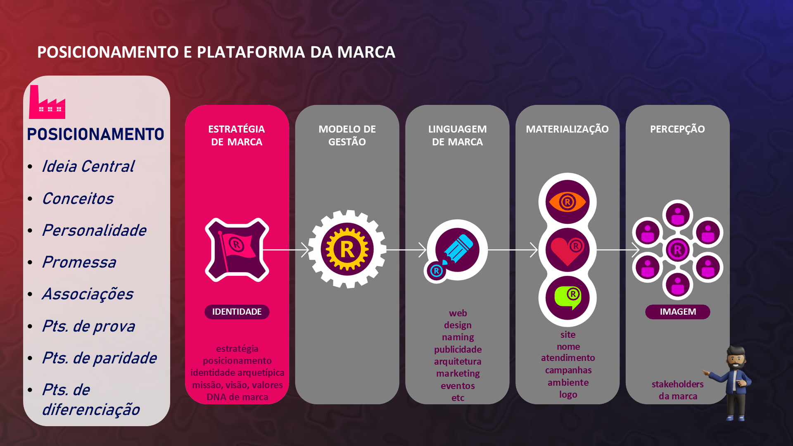
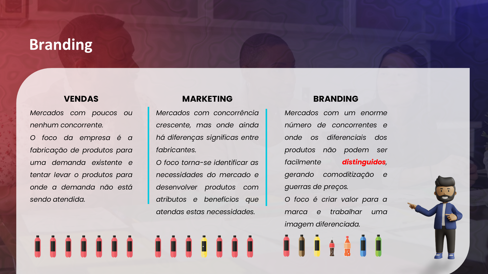

flowchart TB
A["ESTRATÉGIA DE MARCA"] --> B["IDENTIDADE"]
B --> C["LINGUAGEM DE MARCA"]
C --> D["MATERIALIZAÇÃO"]
D --> E["PERCEPÇÃO (Imagem)"]
A1["Posicionamento, Diferenciação, Propósito"] -.-> A
B1["Valores, Personalidade, DNA de marca"] -.-> B
C1["Visual, Verbal, Experiencial"] -.-> C
D1["Nome, logo, site, Embalagem, Pontos de contato"] -.-> D
E1["Reputação junto aos stakeholders"] -.-> E
style A fill:#2e7d32,color:#fff
style B fill:#388e3c,color:#fff
style C fill:#43a047,color:#fff
style D fill:#4caf50,color:#fff
style E fill:#66bb6a,color:#fff
3 Marca como Ativo Estratégico no Agronegócio
A marca não é um custo de marketing, é o ativo intangível mais valioso da empresa agropecuária. Neste capítulo, exploraremos como construir, mensurar e proteger esse ativo.
3.1 O ativo que ninguém contabiliza
No balanço patrimonial de uma propriedade rural ou agroindústria, encontramos terras, maquinário, rebanho, estoques e benfeitorias. Todos esses ativos são mensurados, contabilizados e protegidos. Nenhum produtor deixaria um trator no campo sem manutenção ou um rebanho sem manejo sanitário.
No entanto, o ativo de maior potencial de geração de valor costuma ser completamente ignorado: a marca.
3.1.1 Valor tangível vs. valor intangível
Considere dois cenários reais no mercado cafeeiro brasileiro. O Produtor A produz 500 sacas de café arábica de qualidade e vende para um trader intermediário a R$1.200/saca, alcançando receita bruta de R$600.000. O Produtor B produz 500 sacas do mesmo café, com qualidade equivalente, mas comercializa sob marca própria, com rastreabilidade, história da fazenda e presença em cafeterias especiais, vendendo a R$2.800/saca e atingindo receita bruta de R$1.400.000.
A diferença de R$800.000 não está no grão. Está na marca. Esse é o valor do ativo intangível em ação.
3.2 A jornada da marca no agronegócio

A construção de uma marca no agro segue uma sequência lógica que parte da estratégia e culmina na percepção do mercado:
3.2.1 Fase 1, Definir para construir
O erro mais comum é começar pela materialização, criar um logotipo, fazer um site, abrir perfil no Instagram, sem antes responder às perguntas estratégicas fundamentais. Isso equivale a construir uma casa sem projeto: pode até ficar de pé, mas não atende às necessidades e será necessário derrubar e recomeçar.
A primeira fase é estratégica e exige respostas claras sobre quem somos e o que nos diferencia, para quem existimos, que lugar queremos ocupar na mente do público e qual é a nossa promessa.
3.2.2 Fase 2, Construir para comunicar
Com a estratégia definida, é possível construir com coerência. A identidade visual deve refletir o posicionamento (e não simplesmente ser “algo bonito”), a linguagem verbal precisa manter consistência de tom de voz e mensagens-chave, e os pontos de contato devem ser planejados de forma integrada, da embalagem à feira, do site ao atendimento presencial.
3.2.3 Fase 3, Comunicar para ser percebido
A materialização é o que torna a estratégia tangível. É quando a marca ganha forma nos pontos de contato com o público, seja na embalagem que conta a história da fazenda, no site que apresenta os métodos de produção, no stand na feira que transmite os valores da marca ou no atendimento ao comprador que reflete a personalidade institucional.
3.2.4 Fase 4, Ser percebido para gerar valor
A percepção positiva e consistente ao longo do tempo gera reconhecimento (o público sabe quem você é), preferência (o público escolhe você), lealdade (o público permanece com você), recomendação (o público indica você) e valorização (o público paga mais por você). Cada estágio reforça o seguinte, criando um ciclo virtuoso de construção de valor.
3.3 Stakeholders: os públicos que formam sua marca
No agro, a marca não existe apenas para o consumidor final. Ela precisa ser gerida junto a múltiplos públicos de interesse (stakeholders):
| Stakeholder | O que percebem | Por que importam |
|---|---|---|
| Compradores / clientes | Qualidade, confiabilidade, valor | Geram receita direta |
| Distribuidores / traders | Consistência, volume, reputação | Ampliam o alcance |
| Fornecedores de insumos | Credibilidade, pontualidade | Oferecem melhores condições |
| Funcionários e equipe | Propósito, cultura, valores | Entregam a promessa da marca |
| Comunidade local | Responsabilidade, impacto social | Legitimam a operação |
| Instituições financeiras | Solidez, gestão profissional | Viabilizam investimentos |
| Órgãos reguladores | Conformidade, transparência | Garantem licença de operação |
| Mídia e formadores de opinião | História, relevância, inovação | Amplificam a reputação |
Cada um desses públicos forma uma imagem da sua marca. A gestão de branding busca alinhar todas essas percepções com o posicionamento desejado.
3.4 Pontos de contato: onde a marca acontece
Todo momento em que alguém entra em contato com a sua marca é um ponto de contato. No agro, esses momentos são mais numerosos do que se imagina e se distribuem ao longo de todo o ciclo comercial.
Antes da compra, a marca já se manifesta pelo nome da fazenda, cooperativa ou produto, pelo logotipo e identidade visual, pela presença em site e redes sociais, pela participação em feiras e eventos, pelo material impresso (catálogos, cartões), pelas indicações boca a boca e pelas certificações e selos visíveis.
Durante a compra, os pontos de contato se concentram na negociação comercial (presencial, por telefone ou WhatsApp), nas propostas e contratos, nas amostras de produto, no eventual tour pela propriedade e na embalagem e apresentação do produto.
Após a compra, a marca continua operando pela qualidade percebida no uso ou consumo, pelo suporte pós-venda, pelo relacionamento contínuo, pela recorrência e recompra e pelos depoimentos e avaliações que o comprador compartilha.
ImportanteCada ponto é uma oportunidade
Cada ponto de contato é uma oportunidade de reforçar ou destruir a reputação da marca. Uma negociação mal feita anula meses de postagens bonitas no Instagram. Um produto excepcional entregue em embalagem genérica desperdiça valor.
3.5 Marca corporativa vs. marca de produto

No agronegócio, é comum existir uma sobreposição entre a marca da empresa (fazenda, cooperativa, agroindústria) e a marca dos produtos que ela comercializa. Essa distinção é estratégica:
Marca corporativa, É a marca da organização: Fazenda Santa Clara, Cooperativa Agrária, JBS. Ela representa a empresa como um todo, seus valores, sua história, sua reputação.
Marca de produto, É a marca atribuída a um produto específico: café Melitta, leite Parmalat, suco Del Valle. Cada produto pode ter sua própria identidade dentro do portfólio da empresa.
| Estratégia | Descrição | Exemplo no Agro |
|---|---|---|
| Marca única | A empresa e seus produtos compartilham uma marca | Fazenda Camocim (café) |
| Marcas independentes | Cada produto tem marca própria | BRF (Sadia, Perdigão, Qualy) |
| Marca endossada | Produto com marca própria endossado pela corporativa | Vinícola Miolo + linha Cuvée |
| Marca mista | Combinação de estratégias conforme o produto | Cooperativa com marca institucional + marcas por linha |
Para uma propriedade rural que está começando sua jornada de marca, a recomendação inicial é simplificar: uma marca forte para a fazenda / cooperativa, aplicada aos produtos. Complexidade só se justifica com escala e maturidade de gestão.
3.6 Investir em marca: custo ou investimento?
Uma objeção frequente entre produtores rurais é: “Não tenho dinheiro para investir em marca.” Essa objeção revela uma confusão entre custo e investimento. O custo é algo que você gasta e não recupera (o combustível que você queima no trator é um custo), enquanto o investimento é algo que você aplica e que gera retorno ao longo do tempo (a muda de café que você planta custou dinheiro agora, mas produzirá por 25 anos).
A marca é um investimento que não deprecia com o tempo (ao contrário, aprecia se bem gerida), não pode ser copiada pelo concorrente, gera retorno composto (cada ação de marca potencializa as anteriores), protege o negócio em crises (compradores permanecem com marcas em que confiam) e aumenta o valor do empreendimento como um todo, seja na venda da propriedade, seja no ingresso de sócios.
3.7 Exercício prático, Mapeamento de marca
3.7.0.1 🌿 Ferramenta: Diagnóstico de Marca Agropecuária
Responda para o seu negócio:
1. Percepção atual:
- Se perguntasse a 5 compradores o que pensam da sua marca, o que diriam?
- A percepção deles é a mesma que você gostaria?
2. Pontos de contato:
- Liste todos os momentos em que alguém entra em contato com a sua marca (mínimo 10)
- Classifique cada um como: forte, regular ou fraco
3. Stakeholders:
- Quem são os 5 públicos mais importantes para o seu negócio?
- Como cada um percebe a sua marca hoje?
4. Promessa vs. Entrega:
- O que você promete ao mercado (explícita ou implicitamente)?
- Sua entrega está alinhada com essa promessa?
Guarde este diagnóstico, ele será o ponto de partida para os capítulos seguintes.